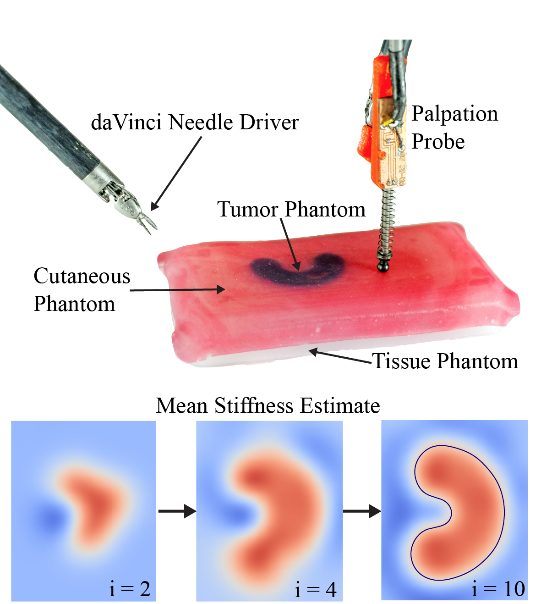
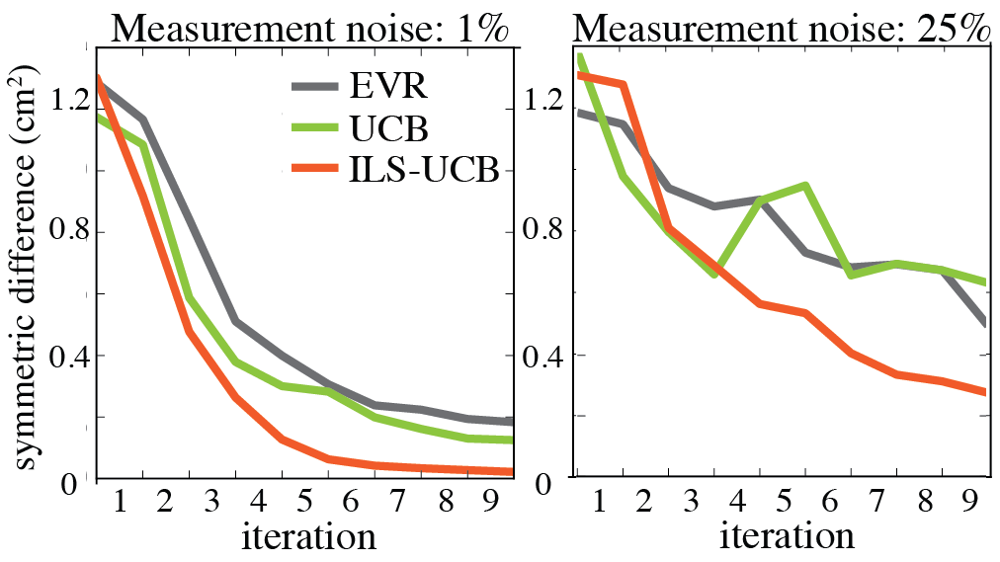

Gaussian Process Adaptive Sampling

In surgical tumor removal, inaccurate localization can lead to removal of excessive healthy tissue and failure to completely remove cancerous tissue.
Automated haptic palpation has the potential to precisely estimate the geometry of embedded tumors during robot-assisted minimally invasive surgery. We formulate the tumor boundary localization problem in terms of Bayesian optimization along implicit curves defined by a Gaussian Process representation of estimated tissue stiffness.
We formulate three palpation algorithms in this context: (1) Expected Variance Reduction (EVR), which emphasizes exploration by minimizing variance, (2) Upper Confidence Bound (UCB), which balances exploration with exploitation using the estimated mean, and Implicit Level Set UCB (ILS-UCB), a variant of UCB that prioritizes sampling near a level set.
We compare these algorithms in controlled simulation experiments, varying levels of measurement noise and bias. We find that ILS-UCB significantly outperforms the other algorithms in terms of symmetric difference between tumor boundary estimate and ground truth, reducing error by up to 10x. In initial physical experiments with a haptic probe and the Intuitive dVRK surgical robot using multiple sample points and a variant of travelling salesman to plan paths between them, the ILS-UCB algorithm is 4x faster than a raster scan path.

Animesh Garg, Siddarth Sen, Rishi Kapadia,
Yiming Jen,
Stephen McKinley, Lauren Miller
PI: Ken Goldberg
Please Contact Animesh Garg at animesh.garg@berkeley.edu